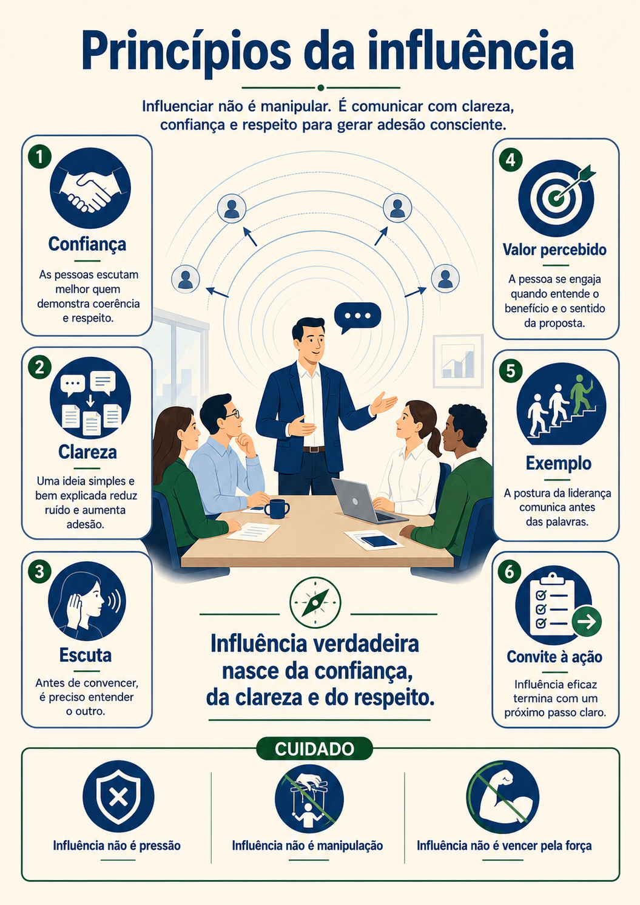
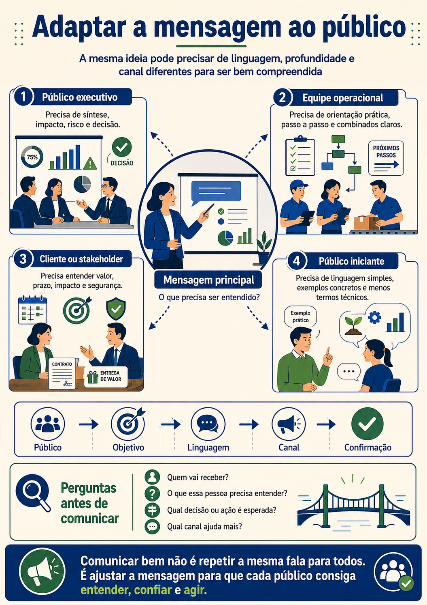

Conversas difíceis e conflitos sob tensão
Uma conversa sobre preparo, fatos, imparcialidade, conflito, cliente, equipe e a postura de liderança quando a pressão aumenta.
Bom dia, pessoal. Pensa em uma situação simples e difícil ao mesmo tempo. Duas pessoas do time discordam na frente de todos. Uma diz que o problema é desenvolvimento. A outra diz que o problema é qualidade. A voz sobe, o clima pesa e alguém espera que a liderança resolva. Se a liderança escolhe um lado por afinidade, perde confiança. Se foge da conversa, o conflito cresce.
Conflito não é apenas briga. Conflito aparece quando existem interesses, expectativas, interpretações ou necessidades diferentes. Pode ser entre pessoas, áreas, cliente e fornecedor, time técnico e negócio, liderança e equipe. O objetivo não é fingir que conflito não existe. O objetivo é conduzir o conflito para um encaminhamento mais justo e claro.
Para isso, preparo é essencial. Conversa difícil não deve começar com fofoca, impressão solta ou frase de corredor. Antes de conversar, a liderança precisa buscar fatos. O que aconteceu? Quando? Quem estava envolvido? Qual combinado existia? Qual foi o impacto? Existe evidência? Existe regra ou processo aplicável?
Fato é aquilo que pode ser observado. Interpretação é a leitura que fazemos do fato. “A entrega atrasou dois dias” é fato. “A pessoa não se importa” é interpretação. Em uma conversa difícil, quanto mais interpretação entra no lugar do fato, maior a chance de injustiça.
Quase certeza ainda pede cuidado. A liderança precisa ouvir, confirmar e pesar informações. Às vezes uma parte do contexto está escondida. Decidir antes de ouvir pode parecer eficiência, mas pode destruir confiança. Em conflito, velocidade sem critério vira risco.

Imparcialidade é uma das bases da gestão de conflitos. Ser imparcial não é ser frio. É não deixar preferência pessoal decidir. Posso gostar mais de uma pessoa e ainda assim reconhecer que ela errou. Posso ter menos afinidade com outra e ainda assim reconhecer que ela está correta naquele ponto.
Uma analogia útil é a balança da justiça. A ideia é pesar fatos, não simpatias. No ambiente de liderança, muitas vezes a pessoa não atua como juíza que dá sentença, mas como conciliadora. Conciliar é ajudar as partes a sair da disputa e voltar ao problema real.
Não tome partido por afinidade.
Tome decisão com base em fato, critério e combinado.
Outro cuidado é não expor conflito desnecessariamente para o grupo inteiro. Se duas pessoas tiveram um atrito, talvez a conversa precise acontecer em ambiente reservado. Quando o conflito vai para uma plateia, entra orgulho, defesa de imagem e necessidade de vencer. Em ambiente reservado, a chance de escuta melhora.
Também precisamos separar erro e pessoa. A pessoa não é o erro. Ela praticou uma ação que precisa ser tratada. Dizer “você é complicado” fecha a conversa. Dizer “nesta reunião, o tom usado gerou resistência no time” abre espaço para ajuste.
Palavras como sempre e nunca precisam de cuidado. “Você sempre faz isso” costuma ser injusto. Talvez a pessoa tenha feito duas vezes. Talvez tenha feito em um contexto específico. Uma fala melhor é: nas duas últimas entregas, aconteceu isso. A precisão reduz defesa e aumenta chance de correção.
Comunicação sob tensão exige protocolo. Pense em um piloto de avião em emergência. Ele sente pressão, mas segue procedimentos. Em liderança, a escala é outra, mas a lógica ajuda. Sob tensão, a pessoa precisa voltar para perguntas básicas: qual é o problema, quais fatos existem, quem precisa ser ouvido, qual impacto, qual decisão ou acordo precisa sair daqui?
Quando a tensão sobe, algumas pessoas atacam, outras fogem, outras travam, outras tentam agradar todo mundo. Conhecer o próprio padrão ajuda. Se sua tendência é atacar, pratique pausa. Se é fugir, pratique enfrentamento gradual. Se é travar, use anotações. Se é agradar, volte ao critério.
Depois da pausa, vamos olhar para um exemplo técnico. Um QA aponta um defeito. A liderança técnica diz que aquilo não estava no escopo. O QA insiste que estava no requisito. A conversa começa a esquentar. O papel da liderança é puxar a discussão para o combinado. O requisito dizia o quê? O critério de aceite estava claro? Existe evidência do comportamento esperado?
Se estava previsto, o ajuste precisa ser tratado como correção. Se não estava previsto, pode virar melhoria ou nova demanda. A decisão não pode depender de quem fala mais alto. Precisa depender do combinado, do impacto e do critério.
Com cliente, a conversa difícil também exige confiança. Se existe insatisfação, custo alto, atraso ou mudança de escopo, a pior saída é esconder ou maquiar. O melhor caminho é organizar fatos, reconhecer impacto, explicar alternativas e propor próximo passo. Cliente não precisa de teatro. Precisa de verdade bem conduzida.
Também é importante reconhecer erro quando ele existe. Reconhecer não é se humilhar. É assumir responsabilidade. Uma liderança que nunca reconhece erro transmite defesa. Uma liderança que reconhece, corrige e combina próximo passo transmite maturidade.
Existe uma frase útil para lembrar: usar a razão para corrigir e o coração para conter. A razão ajuda a tratar o problema com critério. O coração ajuda a preservar a relação depois da correção. Uma conversa difícil não deve destruir o vínculo profissional. Deve corrigir rota.
Princípio de Pareto, pode ajudar em conversas difíceis quando o feedback parece amplo demais. Às vezes, um ponto principal gera a maior parte do impacto e merece prioridade.

Uma conversa difícil precisa de objetivo. Se a pessoa entra apenas para vencer, punir ou descarregar, a conversa já começa torta. Antes de chamar alguém, vale perguntar: o que precisa sair dessa conversa? Um acordo? Uma correção? Um pedido de desculpas? Uma decisão? Uma mudança de comportamento? Uma apuração melhor dos fatos?
Também é útil preparar a primeira frase. A abertura define o tom. Uma abertura agressiva coloca a pessoa na defesa. Uma abertura confusa deixa a conversa solta. Uma abertura madura pode ser: quero conversar sobre uma situação que gerou impacto no time. Minha intenção é entender os fatos, te ouvir e combinarmos o próximo passo.
Durante a conversa, o líder precisa controlar a vontade de preencher silêncios. Às vezes a pessoa precisa de alguns segundos para responder. Se a liderança atropela esse silêncio, perde uma informação importante. Silêncio não é necessariamente problema. Pode ser processamento.
Quando existem duas versões, não tente resolver com pressa. Ouça uma parte, ouça a outra, procure evidências e volte para o combinado. Se necessário, diga: ainda não tenho informação suficiente para decidir com justiça. Vou levantar estes pontos e retorno com encaminhamento. Isso é melhor do que decidir no impulso.
O exemplo do videogame entre filhos ajuda porque mostra que regra precisa ser consistente. Se a regra muda toda vez que alguém reclama mais alto, deixa de ser regra. No trabalho, combinados também precisam de consistência. Se o processo vale para uma pessoa e não vale para outra sem critério claro, a confiança cai.
Conflito com cliente exige uma camada a mais de cuidado. O cliente pode estar irritado, preocupado com custo, pressionado internamente ou sem confiança no fornecedor. Responder apenas com defesa técnica raramente resolve. Primeiro, reconheça a preocupação. Depois, organize fatos. Depois, apresente alternativas e impactos.
Uma fala possível é: entendo a preocupação com o atraso. O impacto é real e precisa ser tratado. O que identificamos até agora foi isto. Temos duas alternativas, uma reduz prazo com mais risco, outra preserva qualidade e exige mais dois dias. Minha recomendação é seguir pela segunda, mas quero alinhar a decisão com você.
A postura sob tensão também inclui corpo e tom. Falar rápido demais pode aumentar ansiedade. Usar ironia pode parecer desprezo. Suspirá muito pode parecer impaciência. A liderança precisa observar a própria comunicação não verbal, principalmente quando a conversa é delicada.
Pedir desculpas pode ser necessário. Não como técnica vazia, mas como reconhecimento real. Se a liderança interrompeu, expôs ou julgou antes de ouvir, pode dizer: eu conduzi mal aquela parte, interrompi antes de entender e isso não ajudou. Quero retomar com mais calma. Essa atitude pode reconstruir confiança.
Em conflitos, a pergunta “quem está certo?” às vezes é menos útil do que “qual problema precisamos resolver?”. Há casos em que todos têm parte da razão e parte do impacto. A liderança precisa sair da disputa de ego e voltar para entrega, relação e critério.
Não postergar também é cuidado. Quando a liderança adia uma conversa difícil, o time percebe. As pessoas veem o problema, comentam em paralelo e perdem confiança na capacidade de condução. Conversa difícil tratada cedo tende a ser menor, mais clara e menos emocional.
Reflexão 33
Reescreva a frase “você nunca colabora” com base em fatos observáveis.
Ver uma possibilidade de resposta
Uma possibilidade: nas duas últimas demandas compartilhadas, não houve retorno no canal do projeto dentro do prazo combinado. Isso impactou o andamento do time. Precisamos combinar uma forma de sinalizar disponibilidade e bloqueios.
Reflexão 34
Pense em um conflito entre duas pessoas. Quais perguntas ajudam a buscar fatos antes de decidir?
Ver uma possibilidade de resposta
Uma possibilidade: o que aconteceu exatamente? Quando ocorreu? Quem estava envolvido? Qual combinado existia? Que evidência temos? Qual impacto foi gerado? O que cada parte precisa para seguir?
Reflexão 35
Escreva uma fala para tratar um conflito em ambiente reservado.
Ver uma possibilidade de resposta
Uma possibilidade: quero conversar com vocês em separado deste grupo para entendermos o que aconteceu com calma. A ideia não é apontar culpado agora, é levantar fatos, ouvir os dois lados e combinar uma forma de seguir sem repetir esse desgaste.
Reflexão 36
Você recebeu um feedback ruim depois de muito tempo achando que estava indo bem. Escreva uma pergunta para transformar a conversa em ação.
Ver uma possibilidade de resposta
Uma possibilidade: qual é o principal ponto que, se eu ajustar primeiro, vai gerar mais impacto na sua percepção sobre minha entrega? Essa pergunta reduz generalidade e ajuda a criar foco de melhoria.
Conversas difíceis fazem parte da liderança. Evitar pode parecer confortável, mas geralmente aumenta o problema. Conduzir bem exige preparo, fato, escuta, critério, coragem e cuidado. A meta não é vencer a discussão. É restaurar alinhamento e permitir que o trabalho continue de forma mais madura.